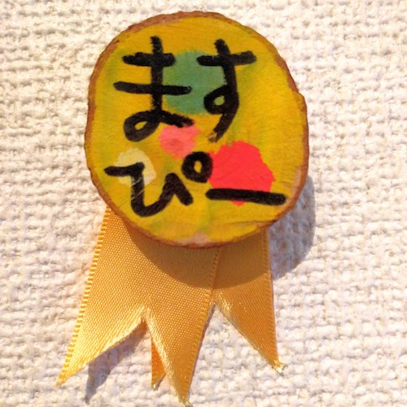

セッション/スピーカー一覧
基調講演 「UX in Sceince」
元Yahoo Korea CEO Kim JInsoo
13:10 - 14:10 Room A・B
アクセシビリティのインクルーシブデザイン
株式会社 SNC Lab 代表取締役 張善英(ジャンソンヨン)
14:30 - 15:10 Room A
チームで取り組む！アクセシビリティコーディング
アクセシビリティに配慮したコーディングをチームで行う方法について、サイボウズ株式会社の開発を例にとって解説します。
アクセシブルなHTMLやCSS,JavaScriptを書く方法をいくつか紹介した上でコーディングを個人ではなくチームで行なうための、啓蒙やルール作りについて、実例をもとにお話します。
14:30 - 15:10 Room B
サイボウズ株式会社 小林大輔
アクセシビリティ検証ツールとしてのNVDA入門
視覚に障害があるユーザーがPCを使う上で不可欠なものがスクリーンリーダーです。無料で利用できる Windows 用スクリーンリーダー NVDA をご紹介します。
- スクリーンリーダーとはどのようなものなのか
- スクリーンリーダーで Web ブラウザをどう操作するのか
- アクセシビリティ検証ツールとして NVDA をどう使えばよいか
をご説明します。
14:30 - 15:10 Room A
 NVDA日本語チーム 西本卓也
NVDA日本語チーム 西本卓也
アクセシビリティに対する WordPress の責任について
世界の主要ウェブサイトの25%以上を支える WordPress におけるアクセシビリティに対する取り組みについて、WordPress プラグイン開発者の視点からお話しします。
14:30 - 15:10 Room B
 合同会社ロックロブスター 三好隆之
合同会社ロックロブスター 三好隆之
アクセシビリティ・ガイドラインの歩き方（初心者編）
WCAG 2.0という言葉を一度は目にしたことがあるかもしれません。しかし、WCAG 2.0は難解な上に独特な文書構成をしているため、慣れない人は読むこと自体が困難な場合があります。
そこで、このセッションでは、WCAG 2.0と周辺文書の関係、これらの読み方、取り巻く状況について、未読の方も念頭にしつつ、なるべく易しく解説することを目的とします。
16:20 - 17:00 Room B
 もんど（@momdo_）
もんど（@momdo_）
メディア事業でのアクセシビリティ展開事例・CAではこうやってます
アメーバブログやAbemaTV、FRESH!、新R25、Ameba Ownd などの多くのメディアを展開するサイバーエージェントで、事業ごと、また事業を超えてアクセシビリティを推進するための工夫を現場のエンジニアが泥臭い苦労を交えてお話します！
17:20 - 18:00 Room B
-  株式会社サイバーエージェント 桝田草一
-
 株式会社サイバーエージェント 土岐真里奈
株式会社サイバーエージェント 土岐真里奈